Instructing Fonts
Contents
- Introduction
- Rasterization and the grid
- Instructing fonts
- The example fonts
- New York: The upper case H
- New York: The upper case O
- Geneva: The upper case B
- Geneva: Lower case k
- A sample font program
- A sample control value program
- Checking the results
Introduction
A quality outline font is one that provides legibility at small sizes on low resolution devices and fidelity to the original design at large sizes and on high resolution devices. Chance effects due to interactions between the outline shape and the placement of the grid should be minimized. This section will describe how to instruct a TrueType font to ensure that it has the properties just described.Rasterization and the grid
One simple technique for converting a glyph outline to a bitmap is to superimpose the outline onto the raster grid. All pixels whose centers fall inside or on the grid would be part of the bitmap image to be generated. All others are not.The result of employing this rule in rasterizating a circle is shown in Figure 1. The figure reveals some of the shortcomings in this simple rasterization technique. Specifically, the results vary with the exact placement of the outline in the raster grid and the shape generated is not symmetric either from left to right nor from top to bottom, as would be desirable in a circle.
Figure 1 Bitmap varies with placement in the raster grid
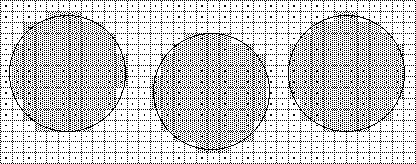
It would be preferable for a given outline to always produce the same result when rasterized at a given size on a given grid. Important properties (like symmetries) should be preserved when a shape is rasterized.
Problems of this sort are not simply of theoretical importance but can affect the legibility of digital typefaces. Common problems produced by uncontrolled rasterization include the uneven stem weights, dropouts,the loss of character features, and serif asymmetries. Some instrances of such problems are shown in Figure 2.
Figure 2 Rasterization problems
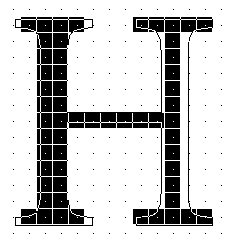
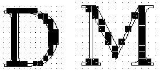
The net result is letters that are illegible at small sizes and inelegant at larger sizes. The difficulties inherent in reading such text are illustrated in Figure 3.
Figure 3 Chance effects produce illegible text
Rasterization problems will eventually disappear as resolution or point size increases. Such improvements, however, do not come quickly enough for users of screen fonts nor, in many cases, for those printing on 300 dpi devices.
As size and resolution increase, legibility will improve but elegance and fidelity to the original design remain at issue even at relatively high numbers of pixels per em. This problem is illustrated in Figure 4. Here, the bitmap produced by dumb rasterization (left) is legible but inelegant. Among the more glaring problems are the widowed pixel at the top of the e, the jagged shape of the lower curve, and the poor appearance of the counter.
Figure 4 10 point uninstructed New York e at 300 dpi
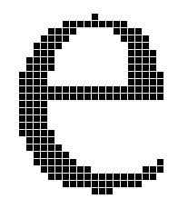
The TrueType language seeks to remedy the problems caused by the accidents of rasterization by deforming a glyph outline before rasterization so that the "right" pixels are turned on. This technique, illustrated in Figure 5, is called "grid-fitting" the outline. Here the darker outline imposed on the lighter master outline is represents the outline that will be rasterized to produce the final output bits used to represent the glyph.
Figure 5 10 point New York e outline after grid-fitting
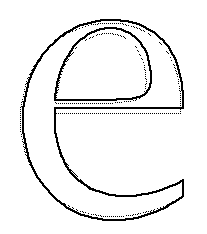
When the grid-fitted outline is set to the rasterizer, the result has a more pleasing appearance that more closely resembles the design captured in the master outline.
Figure 6 10 point instructed New York e at 300 dpi
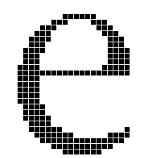
As the previous discussion suggests, some of the goals for grid-fitting are as follows:
- Eliminate the effect of chance relationships to the grid.
- Control the key dimensions in and across glyphs.
- Preserve symmetries and other important glyph features.
It is, however, possible to further refine these general ideas into a set of goals that can be expressed in the TrueType language. These ideas are described, in more concrete terms, in the next several sections.
Instructing fonts
This section provides an overview of the tasks involved in instructing a TrueType font. The techniques presented can be used in the "hand" instructing of fonts. An understanding of these techniques should be useful to those contemplating writing an auto-instructing tool or to anyone needing a low level understanding of instructing process.Determine the intended use
In instructing a font it is important to decide the minimum number of pixels per em at which the font is expected to be used. If it is intended for use only on printers or typesetters, the task of instructing is vastly simplified. Typically the goal is a font that is readable at screen sizes on a 72 dpi device. That might mean instructing a font down to 9 pixels per em.Consider the font has a whole
In instructing glyphs, it is important to preserve the overall look of the font and the relationships between glyphs. To accomplish this it is important to identify key dimensions, such as the cap height, x-height and baseline that apply to the font as a whole. At small pixel per em sizes, subtle variations in these dimensions are not possible and drastic differences will be disasterous.In a Roman font, the upper case 'H' and 'O' and the lower case 'n' and 'o' are typically used as control characters for the purposes of determining the cap height and the x-height for straight and round characters. These characters can be useful in building the control value table.
Figure 7 Key vertical dimensions in Roman fonts.
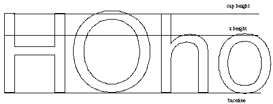
Consider the individual glyphs
Determine which character features need to be preserved. At small pixel per em sizes, some aspects of the design might need to be sacrificed. Therefore it will be necessary to set priorities.Key features to preserve include the stem weights which should be even within a given character and which should break at the same time across similar glyphs in a font. Other features which typically merit attention are serifs, stem widths and diagonals.
Control the white space
In grid-fitting a glyph the goal is to control not simply what pixels make up that character upon rasterization but also the space between strokes and between glyphs. At screen sizes, in particular, controlling white space is a critical task. Unless instructions keep tight control over side bearings there is the likelihood that characters will collide on the screen impairing the appearance of text and destroying readability. Failure to control the space between strokes can result in glyphs that look like black blobs.Control the advance width
Preserving the advance width is important to ensure consistent spacing. Often there is a conflict between obtaining the best spacing possible on the screen and obtaining the best possible spacing on the printer. For example, if a decision is made to round the right side bearing to the grid, the original advance width of the glyph will be changed slightly. Depending upon the size at which the glyph is being rendered, the effect can be to round the value up or down. These errors can be exaggerated at printer sizes producing highly undesirable effects.It is important determine what the most important use of a font when instructing advance widths. Typically, a high priority is placed on preserving the advance widths of the most frequently used glyphs.
Avoid regularizing features
For optimal results, a font instructor should follow these guidelines:- At small sizes, chance effects should not be allowed to magnify small differences in the original outline design of a glyph.
- At large sizes, the subtlety of the original design should emerge.
Using the control value table to coordinate features across glyphs will achieve a desirable uniformity in, for example, x-heights, at small sizes. It can also lead to regularization at larger sizes. For example, the cap height of the upper case round glyphs may differ by a few units. At small sizes, it is correct to ignore these subtle differences because there are too few pixels to properly represent them. At large sizes, the designers intention must be allowed to reemerge.
TrueType solves this problem by use of the control value table cut-in value.
- Values that vary by less than a "small amount" from a control value table entry should assume the table value.
- Values that vary by more than a "small amount" from a control value table entry should retain their original outline value.
The acceptable "small amount" is the control value table cut-in, the difference at which the table value is preferred. When instructing a font, it is important to be conscious of the effect of the cut-in. The cut-in can be changed from its original default value or turned-off entirely in cases where the table value in always preferred.
Handle exceptions last
Robust instructions should handle most of the grid-fitting needs in a font. If the result obtained for a particular glyph at a particular size are disappointing, use a DELTA instruction to obtain the desired bitmap. DELTAs should be used sparingly and only after the non-size specific instructions have been applied.The example fonts
In the next several sections, these general ideas will be applied to the problem of instructing four characters using the TrueType language. The characters are from two different fonts: New York and Geneva. These are the TrueType renditions of the original Macintosh bitmap faces of the same name. They provide examples of instructing serif and sans serif faces.The four examples that follow will approach the task of instructing a glyph as a three step process:
- Determine the key features to be preserved.
- Determine the geometric constraints needed to preserve these features.
- Write instructions designed to preserve those features.
For each glyph, an analysis will be made to determine what features are most important to preserve. Dimensions that must be coordinated across glyphs in the font will be entered into the control value table. Finally an illustrated and annotated look at the instructions for each glyph will be provided. A formal specification of each of the instructions used can be found in the Instructions section.
New York: The upper case H
The New York H is used to illustrate the instruction of an upper case serifed straight glyph in a Roman font. Some upper case straights are shown in Figure 8.Figure 8 Upper case straights
Determining the key features
The problem in instructing the upper case H can be divided into two sub-problems, controlling distances in the x-direction and controlling distances in the y-direction.
The key distances in to be controlled in the x-direction are shown in Figure 9. They are:
- the space to the left of the glyph
- the body width
- the advance width
- the stem widths
- the serifs
Figure 9 New York H: Controlled distances in the x-direction
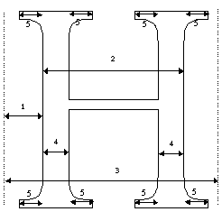
The key distances to be controlled in the y-direction are shown in Figure 10. They are:
- the crossbar thickness
- the serif thickness
- the body height
- the crossbar height
Figure 10 New York H: Controlled distances in the y-direction
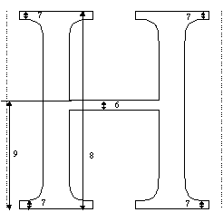
Creating the control value table
The upper case H has features in common with other upper case straight glyphs in this font. The need to coordinate key dimensions in this glyph with key dimensions in other related glyphs suggests the need for a number of control value table entries.The control value table entry for the cap height of the H is derived from an analysis of the heights of related letters in the font. As shown in Table 1 below, entry 2 has the value 1552. Examining the font data shows that this is indeed the height of the H. It is also the height of related glyphs such as the I, K and the L.
To create control value table entry 4, the upper case stem width, it is necessary to look at the widths of the stems in key glyphs across the font and find a value that is acceptable for all. One possible approach is to average the related values.
Once the value is determined, the necessary control value table entry should be entered in the control value table.
As the geometric analysis suggests and the instructions that follow will reveal, the instruction of the H will require several control value table entries. They are shown in Table 1.
Table 1 Control value table for New York
| Entry | Value | Description |
|---|---|---|
| 0 | 1552 | cap height |
| 1 | 0 | baseline |
| 2 | 62 | height of serif |
| 3 | 186 | width of serif |
| 4 | 202 | upper case stem width |
| 5 | 264 | left side bearing |
| 6 | 77 | upper case stroke |
| 7 | 1110 | black body width of upper case H |
The instructions
The grid-fitting instructions for the H necessarily refer to the outline points that make up the glyph description. Figure 11 shows the upper case H outline along with the on-curve and off-curve points that define that outline. The instructions for this glyph follow. Each instruction is accompanied by an explanation of the work it does and, if relevant, an illustration of the points it affects or uses.The instructions begin with the x-direction, the default direction for the freedom and projection vectors.The work of instructing the glyph proceeds from left to right. Instructions80% in the y-direction follow.
Not all of the outline points that define the glyph shape need to be instructed. Key points are moved to the desired location. An interpolation is used to "bring along" the remaining points in the glyph outline.
Figure 11 Uppercase upper case York H
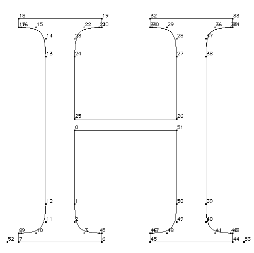
The first set of instructions applied to the New York H controls the placement of the glyph within its advance width. A slightly more sophisticated method of controlling placement of the glyph would be to cluster common left side bearings, and to MIRP[] them from the origin point with a designated control value table entry.
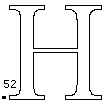 |
PUSHB[000] | Push one byte onto the stack. |
| 52 | The origin point. | |
| SRP0[] | Set rp0 to point 52, the left phantom point. |
The next set of instructions is used to control the space to the left of the glyph. This is accomplished by the MIRP[] instruction controls the distance from a key point on the left stem to the origin point. The reference point, rp0, is changed in preparation for the next instruction.
By choosing not to set the minimum distance Boolean, the instructor has decided that at small pixel per em sizes, when the number of available pixels for rendering the glyph are few, this distance will be allowed to disappear.
Setting the third Boolean in the MIRP[] instruction causes the value to be rounded (using the default round state which is round to grid). Additionally, the cut-in is used.
80%
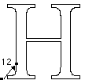 |
PUSHB[001] | Push two bytes onto the stack. |
| 12 | The point to be moved. | |
| 5 | The control value table entry to be used. | |
| MIRP[10100] | Move point 12 until its distance from rp0 (the left phantom point) is equal to the rounded value in control value table entry 5 (left side bearing). | |
| Set rp1 to rp0 (point 52) | ||
| Set rp0 to be point 12. | ||
| Do not use the minimum distance. | ||
| Round and use the cut-in. | ||
| This is a grey distance. | ||
| Set rp2 to point 12. |
The next several instructions are used to control the outer serifs on the left stem. The first MIRP[] controls the length of the lower outside serif. Setting the minimum distance Boolean ensures that the serif will not disappear.
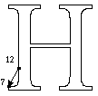 |
PUSHB[001] | Push two bytes onto the stack. |
| 7 | The point to be moved. | |
| 34 | The control value table entry to be used. | |
| MIRP[01100] | Move point 7 until its distance from rp0 (point 12) is the value in control value table entry 34 (width of serif). | |
| Set rp1 to rp0. | ||
| Do not change rp0. | ||
| Use the minimum distance. | ||
| Round and use the cut-in. | ||
| This is a grey distance. | ||
| Set rp2 to point 7. |
The SHP[] instruction makes it possible to coordinate the length of the upper left outside serif with the lower left outside serif. Point 17 is moved to a new location that derives from the grid-fitted location of point 7.
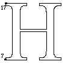 |
PUSHB[000] | Push one byte onto the stack. |
| 17 | The number of the point to be shifted. | |
| SHP[0] | Shift point 17 by the amount rp2 (point 7) has already been moved. |
Continuing the "outside in" approach, the next feature to be controlled in the left stem. Its weight is linked to control value table entry 4 which contains the upper case stem weight value to be used when the cut-in test is made. Tieing this value to the control value table entry means that all similar values will jump to the next largest pixel value at the same time. The minimum distance Boolean is set to ensure that the stem will not disappear.
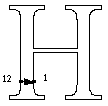 |
PUSHB[001] | Push two bytes onto the stack. |
| 1 | Point number. | |
| 4 | Control value table location. | |
| MIRP[11101] | Move point 1 until its distance from rp0 (point 12) is the value in control value table entry 4 (upper case stem width). | |
| Set rp1 to rp0 (point 12). | ||
| Set rp0 to be point 1. | ||
| Use the minimum distance. | ||
| Round and use the cut-in. | ||
| This is a black distance. | ||
| Set rp2 to point 1. |
Since the previous instruction may have moved point 1, it is necessary to control the intersection of the crossbar and the left stem. This is accomplished by aligning points 25 and point 1. Point 25 is too far away from point 1 to be "brought along" by the subsequent interpolation in the x-direction, whereas point 0 (which is between point 1 and another touched point) will be moved appropriately. The ALIGNRP[] instruction insures that they will be kept along the same vertical axis.
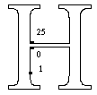 |
PUSHB[000] | Push one byte onto the stack. |
| 25 | The number of the point to be aligned. | |
| ALIGNRP[] | Align point 25 with rp0 (point 1) |
The next instruction controls the length of the serifs on inside left stem. The Boolean settings are the same as in the previous instruction for the outer serif. This is accomplished with a shift instruction.
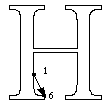 |
PUSHB[001] | push two bytes onto the stack |
| 6 | point number | |
| 34 | control value table location | |
| MIRP[01100] | Move point 6 until its distance, in the x-direction, from rp0 (point 1 is the value in control value table entry 34 (serif width). | |
| Set rp1 to rp0. | ||
| Do not change rp0. | ||
| Use the minimum distance. | ||
| Round and use the cut-in. | ||
| This is a grey distance. | ||
| Set rp2 to point 6. |
As with the outer serifs, it is necessary to coordinate the length of the upper right inside serif with the lower left inside serif.
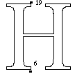 |
PUSHB[000] | push one byte onto the stack |
| 19 | the number of the point to be shifted*/ | |
| SHP[0] | Shift point 19 by the amount rp2 (point 6) has already been moved. |
Continuing left to right across the glyph, the next set of instructions control the black body width. This is a black distance.
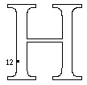 |
PUSHB[000] | Push one byte onto the stack. |
| 12 | Point number. | |
| SRP0[] | Set rp0 to 12, the left side of the black body. |
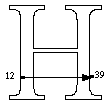 |
PUSHB[000] | Push two bytes onto the stack. |
| 39 | Point number. | |
| 7 | Control value table location. | |
| MIRP[10101] | Move point 39 until its distance from rp0 (point 12) is the value in control value table 7. | |
| Set rp1 to rp0 (point 12). | ||
| Change rp0 to be point 39. | ||
| Do not use the minimum distance. why? | ||
| Round and use the cut-in. | ||
| This is a black distance. | ||
| Set rp2 to point 39. |
At this point, the instructing proceeds from the right outside portion of the glyph towards the left.
The right outside serif length is controlled in a manner similar to the left outside serif.
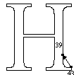 |
PUSHB[001] | Push two bytes onto the stack. |
| 43 | Point number. | |
| 34 | Control value table location. | |
| MIRP[01100] | Move point 43 until its distance from rp0 (point 39) is the value in control value table entry 34. | |
| Set rp1 to rp0 (point 39) | ||
| Do not change rp0. | ||
| Respect the minimum distance. | ||
| Round and use the cut-in. | ||
| This is a grey distance. | ||
| Set rp2 to point 43. |
The upper outside serif is aligned with the lower using a SHP[] instruction.
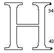 |
PUSHB[000] | Push one byte onto the stack. |
| 34 | Point number. | |
| SHP[0] | Shift point 34 by the amount rp2 (point 43) has already been moved. |
The right main stem weight is controlled in much the same manner as the left stem.
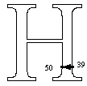 |
PUSHB[001] | Push two bytes onto the stack. |
| 50 | Point number. | |
| 4 | Control value table location. | |
| MIRP[11101] | Move point 50 until its distance from rp0 (point 39) is the value in control value table entry 4, the upper case stem width. | |
| Set rp1 to rp0. | ||
| Change rp0 to be point 50 | ||
| Respect the minimum distance. | ||
| Round and use the cut-in. | ||
| This is a black distance. | ||
| Set rp2 to point 50. |
A key point on the upper stem is aligned with a key point on the lower stem. That point may have been moved in controlling the stem width.
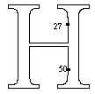 |
PUSHB[000] | Push one byte onto the stack. |
| 27 | Point number. | |
| ALIGNRP[] | Align point 27 with rp0 (point 50). |
The right inside serifs are controlled in the same manner as the left. In some cases, it might be preferable to turn off the minimum distance Boolean in the MIRP[] instruction that follows. The effect would be to make the inner serifs diappear rather than colliding at small sizes.
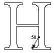 |
PUSHB[001] | Push two bytes onto the stack. |
| 45 | Point number. | |
| 34 | Control value table location. | |
| MIRP[01100] | Move point 45 until its distance from rp0 (point 50) is the value in control value table entry 34 | |
| Set rp1 to rp0. | ||
| Do not change rp0 | ||
| Respect the minimum distance. | ||
| Round and use the cut-in. | ||
| This is a grey distance. | ||
| Set rp2 to point 45. |
The shift instruction is used to align the upper and lower serifs.
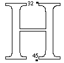 |
PUSHB[000] | Push one byte onto the stack. |
| 32 | Point number. | |
| SHP[0] | Shift point 32 but by the amount rp2 (point 45) has been shifted |
Instructing in the x-direction is now complete. The remaining instructions work in the y-direction. The first step is to reset the freedom and projection vectors to the y-axis.
| SVTCA[0] | Set freedom vector and projection vector to the y-axis |
The MIAP[] instruction is used to control the relationship of a key point to the baseline. The Boolean is set, indicating that both the control value cut-in and round state are used in determining the action taken.
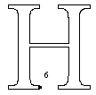 |
PUSHB[001] | Push two bytes onto the stack. |
| 6 | Point number. | |
| 8 | Control value table location. | |
| MIAP[1] | Move point 6 to the location in control value table entry 8 subject to the cut-in. | |
| Set rp0 and rp1 to point 6. |
The ALIGNRP[] instruction aligns the previously moved point with the corresponding point on the right serif.
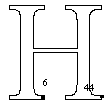 |
PUSHB[000] | Push one byte onto the stack. |
| 44 | Point number. | |
| ALIGNRP[] | Align point 44 with rp0 (point 6). |
Working from bottom to top, the next set of instructions control the height of the bottom serifs. The lower left serif is tackled first.
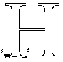 |
PUSHB[001] | Push two bytes onto the stack. |
| 8 | Point number. | |
| 32 | Control value table location. | |
| MIRP[11101] | Move point 8 until its distance from rp0 (point 6) is the value in control value table entry 32 (height of serif). | |
| Set rp1 to rp0 | ||
| Set rp0 to 8. | ||
| Respect the minimum distance. | ||
| Round and use the cut-in. | ||
| This is a black distance. | ||
| Set rp2 to point 8. |
Once a single serif height is established, it can be applied to all of the lower serifs with an align instructions.
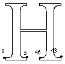 |
PUSHB[000] | Push one byte onto the stack. |
| 3 | Value for loop variable. | |
| SLOOP[] | Set the loop count to 3. | |
| PUSHB[002] | Push three bytes onto the stack. | |
| 5 | Point number. | |
| 46 | Point number. | |
| 43 | Point number. | |
| ALIGNRP[] | Align the points 5, 46 and 43 with rp0 (point 8). This will align the height of the two lower serifs. |
The next set of instructions control the relationship of the top of the H to the cap height using an indirect instruction and a control value table entry.
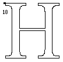 |
PUSHB[001] | Push two bytes onto the stack. |
| 18 | Point number. | |
| 2 | Control value table location. | |
| MIAP[1] | Move point 18 to the location specified in control value table entry 2 (cap height) if the cut-in test succeeds. | |
| Set rp0 and rp1 to point 18. |
The changes made to the top left serif are now applied to the right.
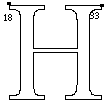 |
PUSHB[000] | Push one byte onto the stack. |
| 33 | Point number. | |
| ALIGNRP[] | Align point 33 with rp0 (point 18). This aligns the right side with the cap height. |
Working down from the top of the glyph, instructions are used to control the height of the upper serifs.
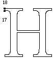 |
PUSHB[001] | Push two bytes onto the stack. |
| 17 | Point number. | |
| 32 | Control value table location. | |
| MIRP[11101] | Move point 17 until its distance from rp0 (point 18)is the value in control value table entry 32 (height of serif). | |
| Set rp1 to rp0 (point 18) | ||
| Change rp0 to point 17. | ||
| Respect the minimum distance. | ||
| Round and use the cut-in. | ||
| This is a black distance. | ||
| Set rp2 to point 17. |
Now all of the bottoms of the upper serifs can be aligned to conform with the changes made by the previous MIRP[] instruction.
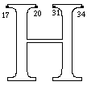 |
PUSHB[000] | Push one byte onto the stack. |
| 3 | Value for loop variable. | |
| SLOOP[] | Set the loop variable to three. | |
| PUSHB[002] | Push three bytes onto the stack. | |
| 20 | Point number. | |
| 31 | Point number. | |
| 34 | Point number. | |
| ALIGNRP[] | Align point 20, 31, and 34 with rp0 (point 17)to control the height of the top serifs |
Since the top and bottom of the glyph may have changed positions, it is necessary to control the relationship of the crossbar to the glyph as a whole. A reference point is set for use in controlling the crossbar height.
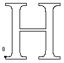 |
PUSHB[000] | Push one byte onto the stack. |
| 8 | Point number. | |
| SRP2[] | Set rp2 to point 8. |
The height of the crossbar is interpolated between the baseline and cap height to preserve its relative position between the top and the bottom of the glyph.
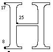 |
PUSHB[000] | Push one byte onto the stack. |
| 25 | Point number. | |
| IP[] | Interpolate point 25 between rp1(point 17)and rp2 (point 8). |
Now that it has been interpolated, the point connecting the crossbar with the left stem is rounded to the grid and touched to prevent its being moved by future interpolations.
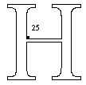 |
PUSHB[000] | Push one byte onto the stack. |
| 25 | Point number. | |
| MDAP[1] | Round and touch point 25. | |
| Set rp0 and rp1 to point 25 |
The height of the crossbar is controlled using a control value table entry.
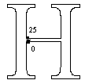 |
PUSHB[001] | Push two bytes onto the stack. |
| 0 | Point number. | |
| 6 | Control value table location. | |
| MIRP11101] | MOve point 0 until its distance from rp0 is the value in control value table entry 6. | |
| set rp1 to rp0 (point25) | ||
| Change rp0 to point 0. | ||
| Respect the minimum distance. | ||
| Round and use the cut-in. | ||
| This is a black distance. | ||
| Set rp2 to point 0 |
Finally, all the changes made will be distributed among the points that were unaffected by the previous instructions. The IUP[] works by interpolating the position of each untouched points relative to the nearest pair of touched points, with each touched point being on either side of the untouched point along the contour. See the Instructions section for more information on the IUP[] instruction.
Note that the interpolation is performed first in the x-direction and then in the y-direction so that the position of untouched points can be adjusted in both directions.
| IUP[1] | Interpolate in x. |
| IUP[0] | Interpolate in y. |
New York: The upper case O
The New York O is an example of an upper case round glyph. The O, alongwith some other upper case rounds in the New York face, is shown in Figure 12.Figure 12 Upper case rounds
Among the special problems faced in instructing these glyphs is the fact that, rather than sitting on the baseline, they overlap it. At small pixel per em sizes, there will not be enough bits to allow for such an overhang. At larger sizes, the original design must be preserved.
Determining the key features
In instructing the upper case O, the features shown in Figure 13 need to be controlled. In the x-direction, they are:
- the space to the left of the glyph
- the round stems
- the advance width
- the body width
Figure 13 The New York O: controlled distances in the x-direction
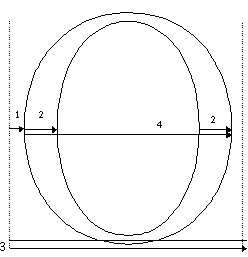
The following features need to be controlled in the y-direction:
- the cap height overlap
- the baseline overlap
- the horizontal stems
Figure 14 New York O: Controlled distances in the y-direction
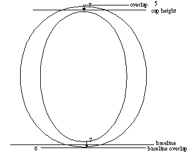
Creating the control value table
To instruct the capital 0, it is necessary to extend the control value table for New York to include new entries.
Table 3-2 : Control value table for New York
| Entry | Value | Description | Used by |
|---|---|---|---|
| 0 | 1552 | straight cap height | H |
| 1 | 0 | baseline | H |
| 2 | 62 | height of serif | H |
| 3 | 186 | width of serif | H |
| 4 | 202 | upper case stem width | H |
| 5 | 264 | left side bearing-H | H |
| 6 | 77 | upper case stroke | H |
| 7 | 1110 | black body width of upper case H | H |
| 8 | 1598 | round cap height | O |
| 9 | -47 | upper case round overlap with baseline | O |
| 10 | 85 | left side bearing-O | O |
| 11 | 62 | upper round horizontal stem width | O |
| 12 | 233 | upper case round stem | O |
| 13 | 86 | right side bearing | O |
The instructions
The instructions for the New York O follow. They refer to outline points shown in Figure 15.Figure 15 The New York upper case O
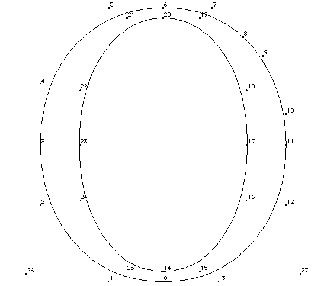
Two distinct approaches to instructing this glyph in the x-direction are presented here. Controlling both the left and right side bearings will produce better looking integer spacing on the screen at low resolutions, but it requires careful attention that the advance width is not drastically affected. This approach is shown first. An alternative approach is briefly described just before instruction in the y-direction is discussed.
Begin by setting rp0 to the left phantom point.
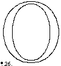 |
PUSHB[000] | Push one byte onto the stack. |
| 26 | Point number. | |
| SRP0[] | Set rp0 to 26. |
Control the left side bearing by tieing the distance between points 26 and 3 to control value table entry 10.
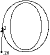 |
PUSHB[001] | Push two bytes onto the stack. | |
| 3 | Point number. | ||
| 10 | Control value table location. | ||
| MIRP[10100] | Move point 3 until its distance from rp0 (point 26) is the value in control value table entry 10. | ||
| Set rp1 to rp0 (point 26). | |||
| Change rp0 to point 3. | |||
| Do not use the minimum distance. | |||
| Round and use the cut-in. | |||
| This is a grey distance. | |||
| Set rp2 to point 3. |
The width of the left round stem is tied to the value in control value table entry 12. The stem will change in coordination with other similar stems in the font. Setting the minimum distance Boolean prevents the stem from disappearing at small sizes. The distance is rounded. Use the control value table is subject to the cut-in.
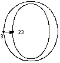 |
PUSHB[001] | Push two bytes onto the stack. |
| 23 | Point number. | |
| 12 | Control value table location | |
| MIRP[01101] | Move point 23 until its distance from rp0 (point 3) is the value in control value table entry 12 (upper case round stem). | |
| Set rp1 to rp0. | ||
| Do not change rp0. | ||
| Respect the minimum distance. | ||
| Round and use the cut-in. | ||
| This is a black distance. | ||
| Set rp2 to point 3. |
The next instructions control the black body width of the glyph.
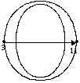 |
PUSHB[001] | Push one byte onto the stack. |
| 11 | Point number. | |
| MDRP[10101] | Move point 11 so that its distance from rp0 (point 3) is the original outline distance between those two points. | |
| Set rp1 to rp0 | ||
| Set rp0 to point 11. | ||
| Do not use the minimum distance | ||
| Round | ||
| This is a black distance. | ||
| Set rp2 to point 11. |
The right round stem is controlled in a manner similar to that of the left stem.
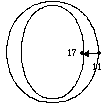 |
PUSHB[001] | Push two bytes onto the stack. |
| 17 | Point number. | |
| 12 | Control value table location. | |
| MIRP[01101] | Move point 17 until its distance from rp0 (point 11) is the value in control value table entry 12. | |
| Set rp1 to rp0 | ||
| rp0 is unchanged. | ||
| Use the minimum distance | ||
| Rounding and cut-in apply. | ||
| This is a black distance. | ||
| Sets rp2 to point 17. |
The right side bearing of the glyph is controlled with a control value table entry, much as the left side bearing was controlled earlier. The minimum distance is not respected and, as a result, this distance can disappear at small pixel per em values.
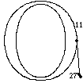 |
PUSHB[001] | Push two bytes onto the stack. |
| 27 | Point number of advance width location. | |
| 13 | Control value table location. | |
| MIRP[10110] | Move point 27 until its distance from rp0 (point 11) is the value in control value table entry 13. | |
| Set rp1 to rp0. | ||
| rp0 is changed to point 27. | ||
| Rounding and cut-in apply. | ||
| Distance is white. | ||
| Sets rp2 to point 27. |
If you choose not to instruct the position of the glyph within its advance width, begin by rounding point 3 to the grid and locking it in place. Then proceed to instruct the left stem, the body width and, finally, the right stem.
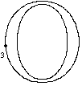 |
PUSHB[000] | Push one byte onto the stack. |
| 3 | Point number. | |
| MDAP[1] | Round and touch point 3. | |
| Set rp0 and rp1 to point 3 |
Before instructing the vertical distances, the freedom and projection vector are set to the y-axis.
| SVTCA[0] | Set freedom vector and projection vector to y-axis. |
The next set of instructions are used to control the baseline overlap. An indirect instruction (MIAP[]) is used to tie the glyph to the baseline at small sizes while allowing the overlap to return once there are a sufficient number of pixels available.
Two things are happening here. Common round stems are being set to some overlap. Overlap is set to zero by the control value program for some set of point sizes.
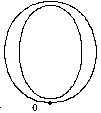 |
PUSHB[000] | Push two bytes onto the stack. |
| 0 | Point number. | |
| 9 | Control value table entry number. | |
| MIAP[1] | Move point 0 to the location specified in control value table entry 9 subject to the cut-in. | |
| The value is rounded. | ||
| Set rp0 and rp1 to point 0. |
A MIRP[] is used to control the height of the lower horizontal round stem. Setting the minimum distance Boolean prevents this horizontal stem from disappearing.
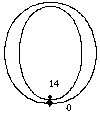 |
PUSHB[000] | Push two bytes onto the stack. |
| 14 | Point number. | |
| 11 | Control value table entry number. | |
| MIRP[01101] | Move point 14 until its distance from rp0 (point 0) is the value in control value table entry 11 (upper case horizontal round stem width). | |
| Set rp1 to rp0. | ||
| rp0 is unchanged. | ||
| The minimum distance is respected. | ||
| Rounding and cut-in apply. | ||
| Distance is black | ||
| Sets rp2 to point 14. |
The cap height of the glyph is controlled using a the control value table entry for upper case round.
| PUSHB[000] | Push two bytes onto the stack. | |
| 6 | Point number. | |
| 8 | Control value table entry number. | |
| MIAP[1] | Move point 6 to the location in control value table 8 subject to the cut-in. | |
| Set rp0 and rp1 to point 6. |
The horizontal stem width is controlled by the MIRP[] instruction.
| PUSHB[000] | Push two bytes onto the stack. | |
| 20 | Point number. | |
| 11 | Control value table entry number. | |
| MIRP[01101] | Move point 20 until its distance from rp0 (point 6) is the value in control value table entry 11 (upper case horizontal round stem width). | |
| rp0 is unchanged. | ||
| Rounding and cut-in apply. | ||
| Distance is black | ||
| Set rp0 to rp1. | ||
| Sets rp2 to point 20. |
The positions of all untouched points are adjusted with an interpolation in the x-direction and an interpolation in the y-direction.
| IUP[1] | Interpolate in x |
| IUP[0] | Interpolate in y. |
Geneva: The upper case B
The upper case B has both straight and round stems, a cross bar and a difficult to control "indentation" where the two round stems meet the crossbar.Figure 16 Glyphs with straight and round stems
Determining the key features
First the features to be controlled in the x-direction are set.- the stem widths
- the black body width
- the crotch between bowls
- the recess of the upper bowl
Figure 17 Geneva B: controlled distances in the x-direction
Next the he features to be controlled in the y-direction are established.
- the cap height
- the relationship to the baseline
- the height of the crossbar
- the width of the horizontal stems
- the crotch
Figure 18 Geneva B: controlled distances in the y-direction
Creating the control value table
The control value table entries needed to instruct the Geneva B are shown below.Table 3 : Control value table for Geneva
| Entry | Value | Description |
|---|---|---|
| 0 | 1552 | cap height |
| 1 | 0 | baseline |
| 2 | 202 | vertical stem width |
| 3 | 155 | horizontal stem height |
The instructions
The instructions for the Geneva B are presented below. The point numbers referred to in the instructions are shown in Figure 19.Figure 19 Geneva upper case B
The instructions begin with a simple method of handling a glyph's black body width and placement within the advance width.
The origin point and advance point are not touched, making the integer advance width always equal to the rounded fractional width. This provides the most accurate placement and width for printer sizes
First, distances in the x-direction are controlled. By default the freedom vector and projection vector point in this direction.
The instructions begin by locking point 8 to the nearest grid line. The effect will be to align the black body width to the grid.
| PUSHB[000] | Push one byte onto the stack. | |
| 8 | Point number. | |
| MDAP[1] | Round point 8 and touch it so that it will be unaffected by future interpolations. | |
| Set rp0 and rp1 to point 8. |
A MIRP[] instruction is used to control the main stem width. This value is coordinated with other similar values using a control value table entry. This technique ensures that stem weights will break at the same pixel per em value when the cut-in test fails.
| PUSHB[000] | Push two bytes onto the stack. | |
| 27 | Point number. | |
| 2 | Control value table entry number. | |
| MIRP[01101] | Move point 27 until its horizontal distance from rp0 (point 8) is the value in control value table entry 2 (upper case stem). | |
| Set rp1 to rp0. | ||
| rp0 is unchanged. | ||
| Rounding and cut-in apply. | ||
| Distance is black. | ||
| Set rp2 to point 27. |
The next instruction ensures that the left sides of both counters will be aligned. A shift instruction is used in preference to the ALIGNRP[] instruction because SHP[0] keeps rp0 at point 8 for the next move instruction. ALIGNRP[] would have required moving rp0 to point 27. SHP[0] does not. This saves one SRP0[] instruction.
| PUSHB[000] | Push one byte onto the stack. | |
| 17 | Point number. | |
| SHP[0] | Shift point 17 by the amount point 27 (rp2) was moved. This works because 27 and 17 share the same x-coordinate in the original outline. |
The next instruction preserves the original outline black body width for the glyph subject to rounding.
| PUSHB[000] | Push one byte onto the stack. | |
| 3 | Point number. | |
| MDRP[10101] | Move point 3 until its distance from point rp0 (point 8) is the original outline distance, subject to rounding and engine compensation. | |
| Set rp1 to rp0. | ||
| Set rp0 to point 3 | ||
| Do not use minimum distance | ||
| Round | ||
| This is a black distance. | ||
| Set rp2 to point 3. |
The lower round vertical stem is "mirped" to the same control value table entry as the left straight stem.
| PUSHB[000] | Push two bytes onto the stack. | |
| 31 | Point number. | |
| 4 | Control value table entry number. | |
| MIRP[01101] | Move point 31 until its distance from rp0 (point 3) is the value in control value table entry 2. | |
| Set rp1 to rp0 | ||
| Do not change rp0. | ||
| Rounding and cut-in apply. | ||
| Distance is black. | ||
| Sets rp2 to point 31. |
The original outline distance between points 14 and 13 is restored, subject to the round state, using MDRP[].
| PUSHB[000] | push one byte onto the stack | |
| 14 | point number | |
| MDRP[10100] | Move point 14 until its distance from point rp0 (point 3) is the original outline distance, subject to rounding and engine compensation. | |
| Set rp1 to rp0. | ||
| Move rp0 to point 14 | ||
| Do not use the minimum distance. | ||
| Round | ||
| This is a grey distance. | ||
| Set rp2 to point 14. |
The upper round vertical stem is controlled using control value table entry 2, the entry used for the other stems.
| PUSHB[000] | Push two bytes onto the stack. | |
| 22 | Point number. | |
| 4 | Control value table entry number | |
| MIRP[01101] | Move point 22 until its distance from rp0 (point 14) is the value in control value table entry 2. | |
| Sets rp1 to rp0. | ||
| rp0 is unchanged. | ||
| Rounding and cut-in apply. | ||
| Distance is black | ||
| Sets rp2 to point 22. |
Reference point 1 is reset in preparation for the interpolation to come.
| PUSHB[000] | Push one byte onto the stack. | |
| 27 | Point number. | |
| SRP1[] | The previous MIRP[] instruction set rp2 to point 22. Now set rp1 to 27 to prepare for an IP[] instruction. |
Interpolating point 0 between points 14 and 27 ensures that its relative position between those points is restored to what it was in the original outline.
| PUSHB[000] | Push one byte onto the stack. | |
| 0 | Point number. | |
| IP[] | Interpolate point 0 between rp1 (14)and rp2(27) |
With instructions in the x-direction complete, the freedom vector and projection vector are set to the y-direction.
| SVTCA[0] | Set the freedom and projection vectors to the y-axis. |
Point 7 is held to the baseline by linking it to the value in control value table entry 1.
| PUSHB[] | Push two bytes onto the stack. | |
| 7 | Point number. | |
| 1 | Control value table entry number. | |
| MIAP[1] | Move point 7 to the position specified in control value table entry 1. | |
| Round the value. | ||
| Set rp0 and rp1 to point 7. |
The height of the horizontal stem is controlled by linking it to the value in control value table entry 3, the horizontal stem height.
| PUSHB[001] | Push two bytes onto the stack. | |
| 27 | Point number. | |
| 3 | Control value table entry number | |
| MIRP[01101] | Move point 27 so that its distance from rp0 (point 7) is the value in control value table entry 3 | |
| Set rp1 to rp0. | ||
| Do not change rp0 | ||
| Use the minimum distance | ||
| Round the value and use the cut-in | ||
| This is a black distance. | ||
| Sets rp2 to point 27. |
The height of the B is controlled using an indirect instruction tied to control value table location 2, the cap height.
| PUSHB[001] | Push two bytes onto the stack. | |
| 10 | Point number. | |
| 0 | Control value table entry number. | |
| MIAP[1] | Move point 10 so that it is at control value table location 0, subject to the cut-in test. | |
| Round the control value table value before moving the point. | ||
| Set rp0 and rp1 to point 10. |
The upper horizontal stem is controlled using the same control value table entry as was used for the lower.
| PUSHB[001] | Push two bytes onto the stack. | |
| 26 | Point number. | |
| 3 | Control value table entry number. | |
| MIRP[01101] | Move point 26 so that its distance from rp0 (point 10) is the value in control value table entry 3. | |
| Set rp1 equal to rp0. | ||
| Do not change rp0. | ||
| Use the minimum distance. | ||
| Round and use the cut-in. | ||
| This is a black distance. | ||
| Set rp2 equal to point 26 |
The reference point rp1 is set to point 27 in preparation for an interpolation used to reestablish the position of point 17 relative to points 26 and 27.
| PUSHB[000] | Push one byte onto the stack. | |
| 27 | Point number. | |
| SRP1 | Set rp1 to point 27. |
| PUSHB[000] | Push one byte onto the stack. | |
| 17 | Point number. | |
| IP | Interpolate point 17 between rp1(point 27) and rp2 (26) |
Once the position of point 17 is adjusted, it is rounded to the grid and touched so that it will not be moved by future interpolations.
| PUSHB[000] | Push one byte onto the stack. | |
| 17 | Point number. | |
| MDAP[1] | Round the location of point 17 and touch it so that it will be unaffected by future interpolations | |
| rp0 and rp1 are set to point 17 |
The width of the cross bar stem is controlled using the control value table entry for horizontal stems.
| PUSHB[000] | Push two bytes onto the stack. | |
| 36 | Point number. | |
| 3 | Control value table entry number | |
| MIRP[01101] | Move point 36 until its distance from rp0 (point 17) is the value in control value table entry 3. | |
| Set rp1 to rp0. | ||
| rp0 is unchanged. | ||
| Rounding and cut-in apply. | ||
| Distance is black | ||
| Sets rp2 to point 36. |
Point 0 is interpolated between points 17 and 36. This adjusts the vertical position of this point much as a previous interpolation adjusted its horizontal location.
| PUSHB[000] | Push one byte onto the stack. | |
| 0 | Point number. | |
| IP[] | Interpolate point 0 between rp1 (point 17) and rp2 (point 36). |
Adjust the position of all untouched points relative to those points that have been affected by the instructions. Adjustment is made first in the x-direction and then in the y-direction.
| IUP[1] | Interpolate in x |
| IUP[0] | Interpolate in y |
Geneva: Lower case k
The Geneva lower case k was chosen because of the instructing challenge presented by its two diagonal strokes. This is the only glyph, among the examples shown, which requires setting the projection vector to a non-orthogonal position relative to the pixel grid.The join between the diagonals and the vertical stem also presents an interesting instructing problem.
A number of other glyphs in Geneva have diagonals that can benefit from similar instructing techniques. Some of these are shown in Figure 12.
Figure 20 Lowercase diagonals
Determining the key features
The goals for this glyph are to control:
- the main stem.
- the relationship of the diagonals to the main stem.
- the diagonals.
Figure 21 Geneva k: controlled distances
Creating the control value table
An expanded control value table for Geneva, with the entries needed to instruct the Geneva k, is shown in Table 4.
Table 4 :Control value table for Geneva
| Entry | value | Description | Used by |
|---|---|---|---|
| 0 | 1552 | cap height B | B |
| 1 | 0 | baseline | k |
| 2 | 202 | upper case vertical stem width | B |
| 3 | 155 | horizontal stem height | B |
| 4 | 1614 | cap height k | k |
| 5 | 1117 | x-height | k |
| 6 | 0 | baseline | k |
| 7 | diagonal stem weight | k | |
| 8 | 194 | lower case straight stem | k |
The instructions
The instructions for the letter k are shown below. The outline points referred to in the instructions are shown in Figure 22.Figure 22 Lower case Geneva k
The instructions control the key points in the x-direction and the y-direction before beginning to tackle diagonals. Once the grid-fitting problems in those directions are taken care of, the diagonals are instructed.
The instructions begin by aligning the left edge of the glyph to the grid and locking it in place.
| PUSHB[000] | Push one byte onto the stack. | |
| 1 | Point number. | |
| MDAP[1] | Round the location of point 1 and touch it so that it will be unaffected by future interpolations. | |
| Set rp0 and rp1 to point 1. |
Control the width of the main stem.
| PUSHB[000] | Push two bytes onto the stack. | |
| 10 | Point number. | |
| 7 | Control value table entry number. | |
| MIRP[01101] | Move point 10 until its distance from rp0 (point 1) is the value in control value table entry 7. | |
| rp0 is unchanged. | ||
| Rounding and cut-in apply. | ||
| Distance is black | ||
| Sets rp2 to point 10. |
The points connecting the main stem to the diagonals are aligned in the x-direction.
| PUSHB[000] | Push one byte onto the stack | |
| 4 | Point number. | |
| SHP[0] | Shift point 4 by the amount that rp2 (point 10) has been shifted. |
The inside of the diagonals in the x-direction (and subsequently the black body width) are controlled rather than the outside because, in this k, the way the two diagonal strokes come to a point is an important feature. It is important to grid align the points in that crotch in the x-direction, and control both points in the y-direction as well to maintain their existing relationship. Subsequently the diagonal stem weight will be controlled from that side of the stroke. Points 4 and 10 will not be moved again.
| PUSHB[000] | Push one byte onto the stack. | |
| 9 | Point number. | |
| MDRP[10101] | Move point 9 until its distance from rp0 (point 1) is the original outline distance, subject to rounding and the engine compensation. | |
| Set rp2 to point 9 |
The relative relationship of points 9 and 8 is preserved with the shift instruction.
| PUSHB[000] | Push one byte onto the stack. | |
| 8 | Point number | |
| SHP[0] | Shift point 8 by the amount that rp2 (point 9) has been moved. |
The top diagonal is aligned with the bottom diagonal.
| PUSHB[000] | Push one byte onto the stack. | |
| 5 | Point number. | |
| MDRP[10100] | Move point 5 until its distance from rp2 (point 9) is the original outline distance, subject to rounding and the engine compensation. | |
| Set rp2 to point 5. | ||
| The effect of this instruction is to preserve the original relationship of point 5 to point 9 (which was moved by the previous MDRP[] instruction). |
Points 6 is shifted much as point 8 was earlier.
| PUSHB[000] | Push one byte onto the stack. | |
| 6 | Point number. | |
| SHP[0] | Shift point 6 by the amount that rp2 (point 5) has been moved. |
The crotch of the k is adjusted to reflect the movement that has taken place in the diagonals.
| PUSHB[000] | Push one byte onto the stack. | |
| 6 | Point number. | |
| SHP[0] | Shift point 6 by the amount that rp2 (point 5) has been moved. |
The freedom and projection vectors are set to the y-axis so that instruction in the vertical direction can begin.
| SVTCA[0] | Set the freedom and projection vector to the y-axis |
The glyph is tied to the baselines with a control value table entry.
| PUSHB[001] | Push two bytes onto the stack. | |
| 1 | Point number. | |
| 6 | Control value table entry number. | |
| MIAP[1] | Move point 1 to the location in control value table entry 6 subject to the cut-in. | |
| Set rp0 and rp1 to point 1 |
Points 8 and 9 are aligned so that they will be in their final location in the x-direction and the y-direction before the diagonals are instructed.
| PUSHB[000] | Push one byte onto the stack. | |
| 9 | Point number. | |
| ALIGNRP[] | Align point 9 with rp0 (point 1) |
| PUSHB[000] | Push one byte onto the stack. | |
| 8 | Point number. | |
| ALIGNRP[] | Align point 8 with rp0 (point 1). |
The top of the glyph is held to the cap height using control value table entry 0.
| PUSHB[001] | Push two bytes onto the stack. | |
| 3 | Point number. | |
| 4 | Control value table entry number. | |
| MIAP[1] | Move point 3 to the location in control value table entry 4 subject to the cut-in. | |
| Set rp0 and rp1 to point 3 |
Point 5 is aligned to the x-height using a control value table entry. Point 6 is then aligned with point 5.
| PUSHB[001] | Push two bytes onto the stack. | |
| 5 | Point number. | |
| 5 | Control value table entry number. | |
| MIAP[1] | Move point 5 to the location in control value table entry 5 subject to the cut-in. | |
| Set rp0 and rp1 to point 5 |
| PUSHB[000] | Push one byte onto the stack. | |
| 6 | Point number. | |
| ALIGNRP[] | Align point 6 with rp0 (point 5). |
The positions of points 4, 7 and 10 are adjusted relative to the baseline (point1) and the x-height (point 5) using an interpolation in the y-direction.
| PUSHB[000] | Push one byte onto the stack. | |
| 1 | point number | |
| SRP2[] | Set rp2 to point 1. |
| PUSHB[000] | Push one byte onto the stack. | |
| 3 | Point number. | |
| SLOOP[] | Set the loop variable to 3. | |
| PUSHB[000] | Push three bytes onto the stack. | |
| 4 | Point number. | |
| 7 | Point number. | |
| 10 | Point number. | |
| IP[] | Interpolate points 4, 7 and 10 between rp1 (point 5) and rp2 (point 1) |
Once all instructions in the x-direction and y-direction are complete, the instruction of the diagonals can proceed. The projection vector is changed to make movement perpendicular to the lower diagonal. Movement will be in the x-direction.
| PUSHB[001] | Push two bytes onto the stack. |
| 9 | Point number. |
| 10 | Point number. |
| SPVTL[1] | Set the projection vector to be perpendicular to the line from point 9 to point 10 |
| SFVTCA[1] | Set the freedom vector to the x-axis. |
The lower diagonal is instructed first. Point 8 is moved until the width of the lower diagonal is that of a lower case straight stem.
| PUSHB[000] | Push one byte onto the stack. | |
| 9 | Point number. | |
| SRP0[] | Set rp0 to point 9. |
| PUSHB[001] | Push two bytes onto the stack. | |
| 8 | Point number. | |
| 8 | Control value table location | |
| MIRP[01101] | Move point 8 until its distance from rp0 (point 9) is the value in control value table entry 8. | |
| Respect the minimum distance. | ||
| Round and use the cut-in. | ||
| This is a black distance. | ||
| Set rp2 to point 8. |
The width of the upper portion of the lower diagonal is adjusted in a similar manner.
| PUSHB[000] | Push one byte onto the stack. | |
| 10 | Point number. | |
| SRP0[] | Set rp0 to point 10. |
| PUSHB[001] | Push two bytes onto the stack. | |
| 7 | Point number. | |
| 8 | Control value table location. | |
| MIRP[01101] | Move point 7 until its distance from rp0 (point 10) is the value in control value table location 8. | |
| Respect the minimum distance. | ||
| Round and use the cut-in. | ||
| This is a black distance. | ||
| Set rp2 to point 7. |
The upper diagonal is now instructed. The projection vector is reset to be perpendicular to the upper diagonal. The remaining instructions mimic those used on the lower diagonal.
| PUSHB[001] | Push two bytes onto the stack. | |
| 4 | Point number. | |
| 5 | Control value table location | |
| SPVTL[1] | Set the projection vector perpendicular to the line defined by points 4 and 5. | |
| PUSHB[000] | Push one byte onto the stack. | |
| 5 | point number | |
| SRP0[] | Set rp0 to point 5. |
| PUSHB[001] | Push two bytes onto the stack. | |
| 6 | Point number. | |
| 7 | Control value table location. | |
| MIRP[01101] | Move point 6 until its distance from rp0 (point 5) is the value in control value table location 7. | |
| Respect the minimum distance. | ||
| Round and use the cut-in. | ||
| This is a black distance. | ||
| Set rp2 to point 6. |
| PUSHB[000] | Push one byte onto the stack. | |
| 4 | Point number. | |
| SRP0[] | Set rp0 to point 4. |
A final tricky problem involves the need to move point 7 to control the upper diagonal stroke weight. This point is already in the right place for the lower diagonal. If the freedom vector is set parallel to the line which is already controlled, we can fix the upper diagonal without disturbing the lower.
| PUSHB[001] | Push two bytes onto the stack. | |
| 7 | Point number. | |
| 8 | Point number. | |
| SFVTL[0] | The freedom vector is set parallel to the line from point 7 to point 8. | |
| PUSHB[001] | Push two bytes onto the stack. | |
| 7 | Point number. | |
| 7 | Point number. | |
| MIRP[01101] | Move point 7 until its distance from rp0 is the value in control value table location 7. | |
| Respect the minimum distance. | ||
| Round and use the cut-in. | ||
| This is a black distance. | ||
| Set rp2 to point 7. |
Lastly, the changes made are interpolated over the untouched points in the outline.
| IUP[1] | Interpolate in x. |
| IUP[0] | Interpolate in y. |
A sample font program
The font program is used to define function definitions and, in rare cases, instruction definitions.Function 0 reads a value from the control value table, rounds that value, and writes the rounded value back to the control value table. It takes two parameters. At the time the function is called, the item at the top of the stack should be the control value table address from which the value is read. The second item on the stack should be the control value table location to which the value will be written.
| PUSHB[000] | Push one byte onto the stack. |
| 0 | This is FDEF zero. |
| FDEF | Begin a function definition. |
| RCVT[] | Read a value from the control value table |
| ROUND[01] | Round the black distance. |
| WCVTP[] | Write the rounded value back to the control value table. |
| ENDF[] | End the current function definition. |
A call to function 0 might look like this:
| PUSHB[001] | Push two bytes onto the stack. |
| 4 | Control value location to be written. |
| 21 | Control value location to be read. |
| 0 | Number of function to call. |
| CALL[] | Call function zero. |
Function 1, shown below, can be used to control serif width. Control value table entry 3 holds the appropriate value for the New York serif width. It takes two parameters, the reference point number and the point to be MIRPed.
| PUSHB[000] | Push one byte onto the stack. |
| 1 | This is FDEF one. |
| FDEF | Begin a function definition. |
| SRP0 | Set reference point zero. |
| PUSHB[000] | Push one byte onto the stack. |
| 3 | Control value table entry number. |
| MIRP[00100] | Move point 34 until its distance from rp0 is the value in control value table entry 3 (serif width). |
| ENDF[] | End the current function definition. |
Function 1 can be used in instructing the upper case I as shown below.An extended control value table for New York is given below.
Table 5 Control value table for New York
| Entry | Value | Description | Used by |
|---|---|---|---|
| 0 | 1552 | straight cap height | H, I |
| 1 | 0 | baseline | H, I |
| 2 | 62 | height of serif | H, I |
| 3 | 186 | width of serif | H, I |
| 4 | 202 | upper case stem width | H |
| 5 | 264 | left side bearing-H | H |
| 6 | 77 | upper case stroke | H |
| 7 | 1110 | black body width of upper case H | H |
| 8 | 1598 | round cap height | O |
| 9 | -47 | upper case round overlap with baseline | O |
| 10 | 85 | left side bearing-O | O |
| 11 | 62 | upper round horizontal stem width | O |
| 12 | 233 | upper case round stem | O |
| 13 | 86 | right side bearing | O |
| 14 | ascent | I |
Figure 23 The uppercase New York I
Point 6 is "dapped" so that it can serve as a reference point for future instructions.
| PUSHB[000] | Push one byte onto the stack. | |
| 6 | Point number. | |
| MDAP[1] | Round point 6 and touch it so that it will be unaffected by future interpolations. | |
| Set rp0 and rp1 to point 6. |
The stem width is controlled by "MIRPing" from point 6 to point 19.
| PUSHB[001] | Push two bytes onto the stack. | |
| 19 | Point number. | |
| 4 | Control value table location. | |
| MIRP[11101] | Move point 19 until its horizontal distance from point 6 is the value in control value table location 4 (upper case stem width). | |
| Set rp1 to rp0. | ||
| Change rp0 to point 19. |
Successive function calls, made with the LOOPCALL[] command, are used to control the four serifs.
| NPUSHB[] | Push bytes onto the stack |
| 11 | Number of bytes to push. |
| 1 | Point number for MIRP[]. |
| 6 | Set rp0 to this number. |
| 12 | Point number for MIRP[]. |
| 6 | Set rp0 to this number. |
| 13 | Point number for MIRP[]. |
| 19 | Set rp0 to this number. |
| 23 | Point number for MIRP[]. |
| 19 | Set rp0 to this number. |
| 4 | Number of times to execute that function. |
| 1 | Number of function to call. |
| LOOPCALL[] | Call function 1. |
The vectors are reset to the y-axis so that the vertical dimensions can be instructed.
| SVTCA[0] | Set freedom vector and projection vector to the y-axis. | A MIAP[] | instruction is used to control the baseline |
| PUSHB[001] | Push two bytes onto the stack. | |
| 1 | Point number. | |
| 1 | Control value table entry number. | |
| MIAP[1] | Move point 1 to the location specified in control value table entry 1 (baseline). | |
| Round the value. | ||
| Set rp0 and rp1 to point 1. |
A second MIAP[] is used to control the cap height.
| PUSHB[001] | Push two bytes onto the stack. | |
| 12 | Point number. | |
| 0 | Control value table entry number. | |
| MIAP[1] | Move point 12 to the location specified in control value table entry 0 (cap height). | |
| Round the value. | ||
| Set rp0 and rp1 to point 11. |
A MIRP[] is used to control the left serif height. An ALIGNRP[] instruction is used to align the bottom of the right serif with the left.
| PUSHB[001] | Push two bytes onto the stack. | |
| 11 | Point number. | |
| 2 | Control value table location number. | |
| MIRP[11101] | Control the serif height by moving point 11 until its distance from rp0 (point 12) is the value in control value table location 2 (height of serif). | |
| Set rp1 to rp0. | ||
| Change rp0 to 11. | ||
| Use the minimum distance |
| PUSHB[000] | Push one byte onto the stack. | |
| 14 | Point number. | |
| ALIGNRP[] | Align point 14 with rp0 (point 11) |
Interpolate in x-direction and the y-direction to distribute changes made to instructed points to those that were unaffected by instructions.
| IUP[1] | Interpolate in the x-direction. |
| IUP[0] | Interpolate in the y-direction. |
A sample control value program
The control value program is a set of TrueType instructions that are executed once when the font is first accessed and again whenever the font, point size or transformation matrix change. The control value program is stored in the 'prep' table.A sample control value program is presented below. It begins by setting the value of scantype and establishing a new value for the control value cut-in.| PUSHW[000] | Push one word. |
| 511 | Value signifying no stubs. |
| SCANCTRL[] | Set scantype |
| PUSHB[000] | Push one byte onto the stack. |
| 70 | Cut-in value |
| SCVTCI | Set the control value cut-in to 70/64 |
The next set of instructions are used to establish an alternative control vaue cut-in for cases where the number of pixels per em in a glyph is less than 50. In such cases the default is set to 128/64ths, which is two pixels.
| MPPEM[] | Get the number of pixels per em in the current glyph. |
| PUSHB[] | Push one byte onto the stack. |
| 50 | Pixel per em value. |
| GT[] | Compares the number at the top of the stack (50) with the number below it (the number of pixels per em). If ppem > 50, TRUE is pushed onto the stack. Otherwise, false is pushed. |
| IF[] | If comparison yielded TRUE execute the body of the IF statement. |
| PUSHB[] | Push one byte onto the stack. |
| 128 | Cut-in value. |
| SCVTCI[] | Set the control value cut-in |
| EIF[] | End of if statement. |
Next a number of points are established in the twilight zone. The first step is to set the zone pointers to refer to the zone 0, the twilight zone.
| PUSHB[000] | Push one byte onto the stack. |
| 0 | Zone pointer number. |
| SZPS[] | Set all the zone pointers to reference the twilight zone. |
The vectors are set to the y-axis so that vertical relationships can be controlled.
| SVTCA[0] | Set the freedom and projection vector to point to the y-axis. |
A point is established at the rounded ascent height.
| PUSHB[001] | Push two bytes onto the stack.. |
| 0 | Point number. |
| 14 | Control value table entry number. |
| MIAP[1] | Set twilight point 0 to rounded height of control value table entry 14 (the ascent). |
| Set rp0 and rp1 to point 0. |
Another point is established at the rounded baseline position.
| PUSHB[001] | Push two bytes onto the stack.. |
| 1 | Point number. |
| 1 | Control value table entry number. |
| MIAP[1] | Set twilight point 1 to rounded height of control value table entry 1 (the baseline). |
| Set rp0 and rp1 to point 0. |
Reference point 2 is set to the ascent.
| PUSHB[] | Push one byte onto the stack. |
| 0 | Reference point number. |
| SRP2[] | Set rp2 to point 0. |
A third point is established at the unrounded cap height.
| PUSHB[001] | Push two bytes onto the stack. |
| 2 | Point number |
| 0 | Control value table entry number. |
| MIAP[0] | Set twilight point 2 to the unrounded height specified in control value table entry number 0 (the cap height). |
The cap height is interpolated betwen the ascent and the baseline to preserve its location relative to those two rounded values. The coordinate for the interpolated point is obtained and its value written back to control value table location 0.
| PUSHB[000] | Push one byte onto the stack. |
| 1 | Point number. |
| SRP1[] | Set reference point 1 to point 1 (the baseline height.) Note that rp2 is still at point 0 which is the ascent height. |
| PUSHB[000] | Push one byte onto the stack. |
| 2 | Point to interpolate. |
| IP[] | Interpolate the cap height between the ascent and the baseline. |
| PUSHB[000] | Push one byte onto the stack. |
| 2 | Point number. |
| GC[1] | Get the current value for point 2 now that it has been interpolated |
| PUSHB[000] | Push one byte onto the stack. |
| 0 | Control value table address. |
| WCVTP[] | Write it back to control value table 0. |
Function 0 is called to read, round and then write back the newly interpolated control value table entry 0. Since the function now called does not access any points in the glyph zone, it is unnecessary to reset the zone pointers to zone 1. The default value for the zone pointers will be automatically resetablished for each glyph program.
| PUSHB[001] | Push two bytes onto the stack. |
| 2 | Function parameter. |
| 0 | Function number. |
| CALL[] | Use FDED 0 to read, round and write the newly interpolated control value table entry. |
Checking the results
The best test of whether a font is successful is to view examples that are typical of the expected use. Look at examples of what you intend to print. If a font is expected to serve as a screen font on a 72 dpi device, look at sample test at 10 and 12 point on the screen. Other tests can be useful, however, in isolating particular problems.The waterfall, a line of text that is repeated at sizes that decrease by one pixel per em, makes weight jumps more apparent. A waterfall with screen fonts is shown in Figure 25. Figure 25 shows the same text on a high resolution printer.
Figure 24 A waterfall with 9 to 24 point Geneva at 72 dpi
Figure 25 A waterfall with 6 to 24 point Geneva
Comparing text from the bold and plain variations of a font at a succession of sizes allows you to ensure that they are readily distinguishable.
Figure 26
Spacing tests allow you to see how letters look in context. Examine each upper case letter between the H and the O. This allows you to see how the glyph will look next to a flat and a round glyph. For lower case letters use the n and the o.
Figure 27 A spacing test with 12 point New York
Another useful test is to look at capital letters followed by lower case.
Figure 28 Capitals followed by lower case glyphs
Pangrams allow you to see the entire alphabet in a small amount of text.
Figure 29 A pangram
It is also important to check the alignment of the ascenders and descenders and to compare characters posessing similar characteristics.
Figure 30 Sets of related glyphs